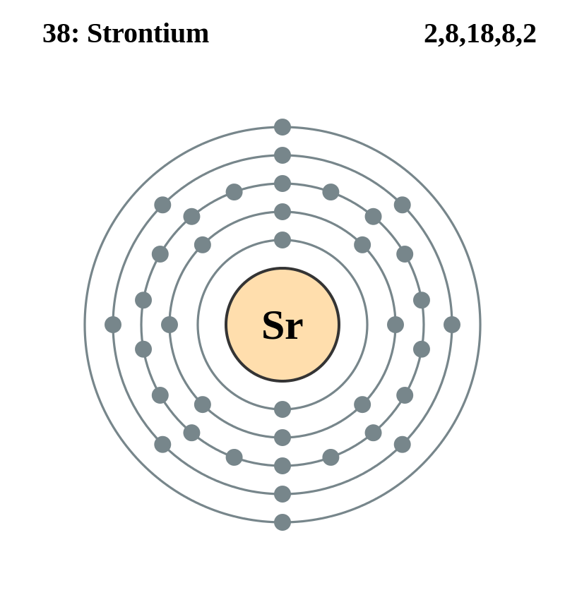

Basic Information about the element
Basic Information about the element
Name: Strontium
Symbol: Sr
Atomic Number: 38

1s2 2s2 2p6 3s2 3p6 3d10 4s2 4p6 5s2
The chemical element strontium is classed as an alkaline earth metal.
It was discovered in 1790 by A. Crawford.
| Number of Protons/Electrons: | 38 |
| Number of Neutrons: | 50 |
| Atomic Mass: | 87.62 amu |
| Melting Point: | 769.0 °C |
| Boiling Point: | 1384.0 °C |
| Classification: | Alkaline Earth Metals |
| Uses: | Strontium is used to produce flares, fireworks and crimson color. |